Week One
This week was focused on creating the basic shapes: a simple desk and a chair as an introduction to working with Maya.
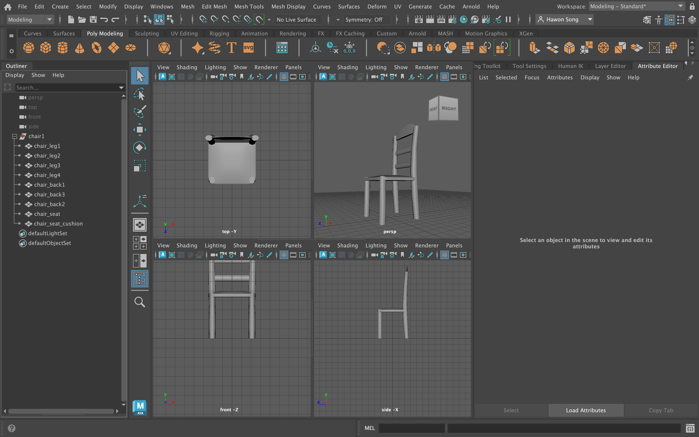 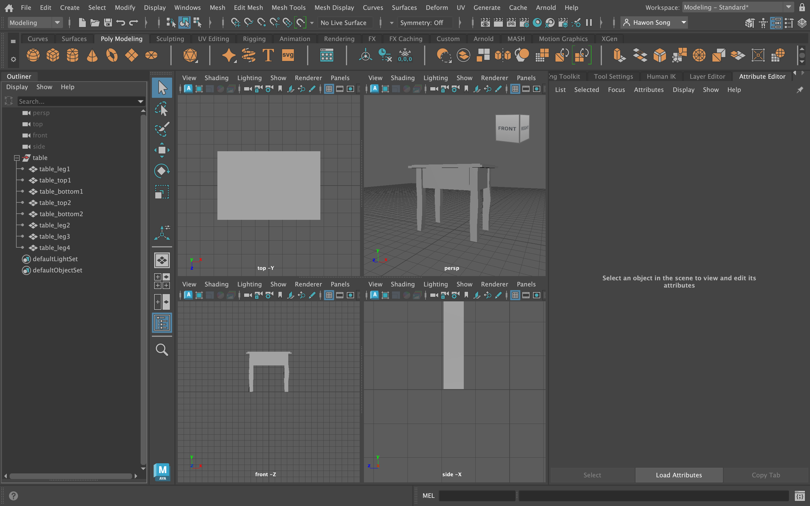These images are the initial references I used to capture the essence of Van Gogh's iconic style and color palette.
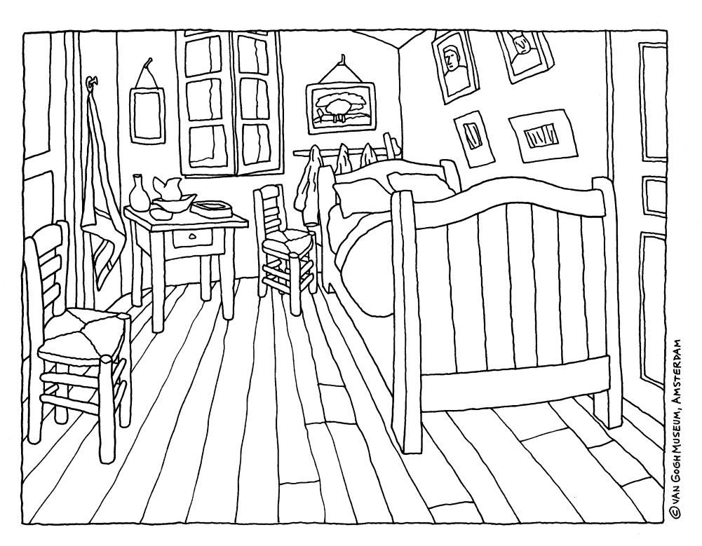 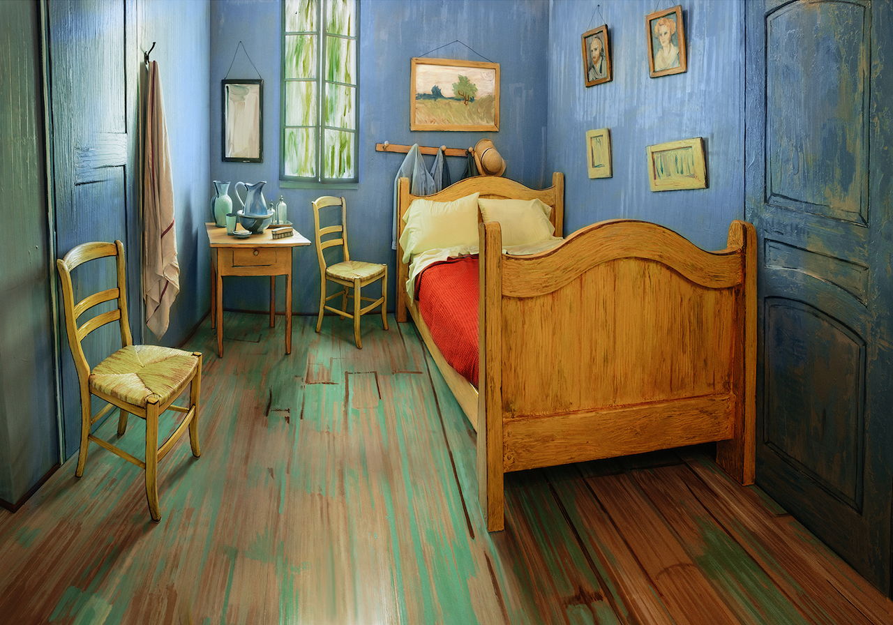 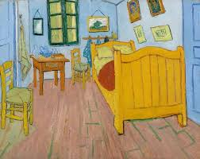This week was focused on creating the basic shapes: a simple desk and a chair as an introduction to working with Maya.
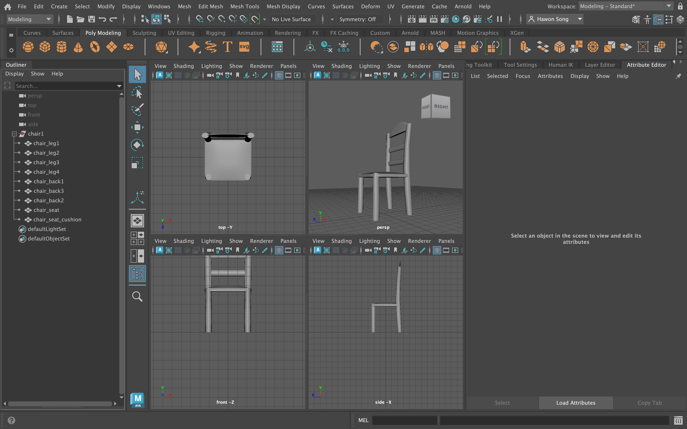 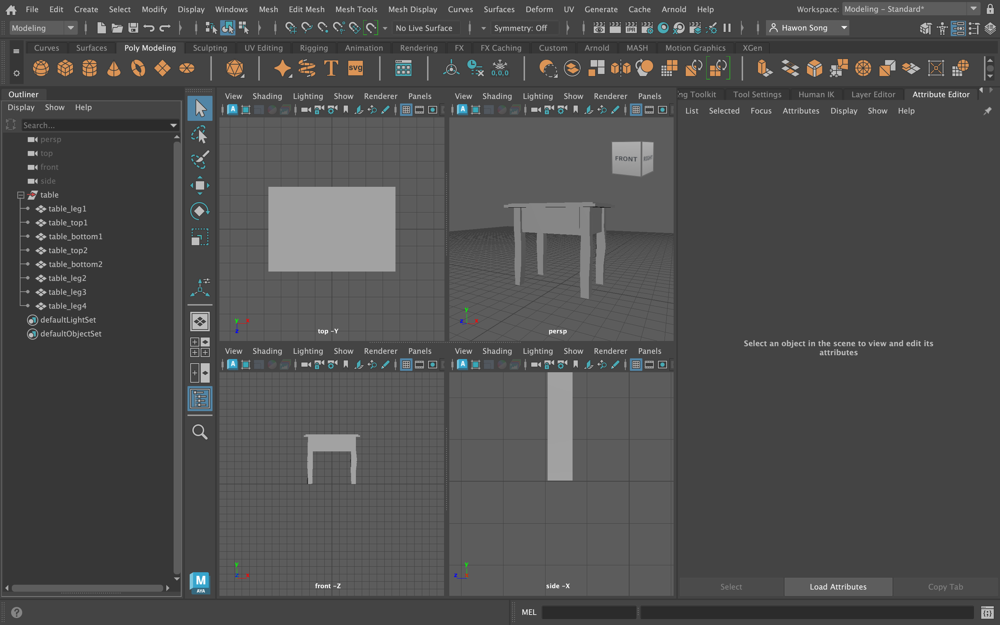During the second week, the room started to take shape with the basic layout and essential elements in place.
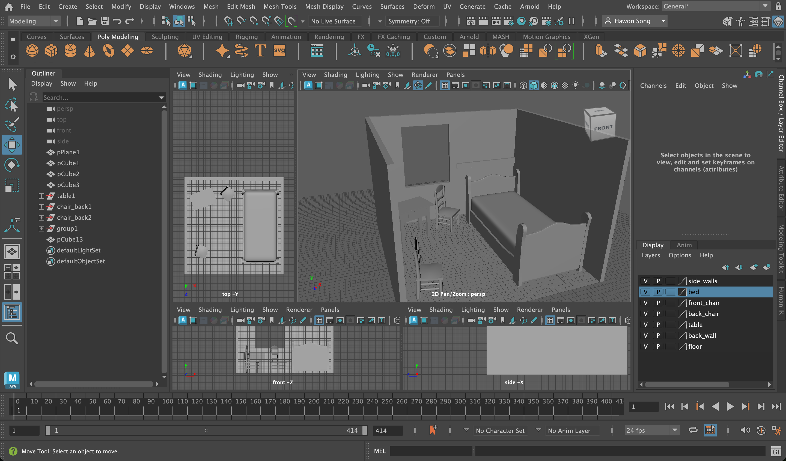In the third week, I added more objects and details to the room, bringing it closer to the final vision.
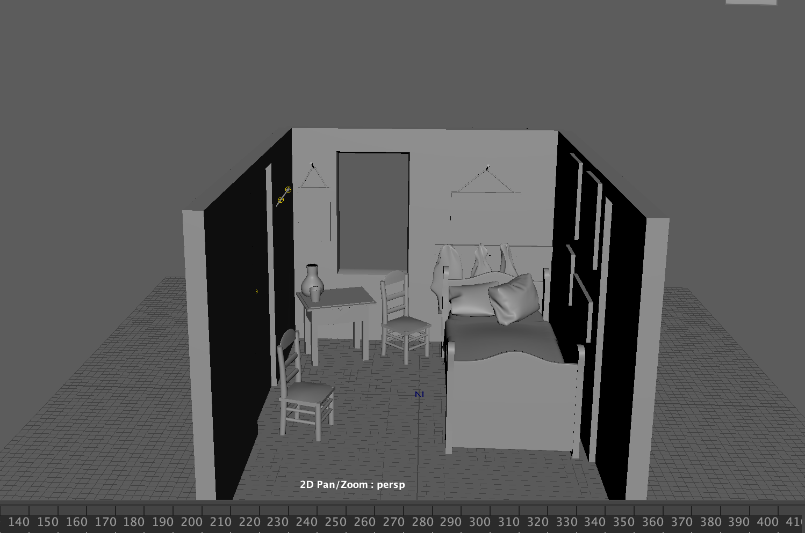The culmination of weeks of hard work. This final set showcases the completed 3D model of Van Gogh's Bedroom in Arles.


The textures are hand-painted in Adobe Photoshop using a stamp tool for authenticity, based on the original works of Van Gogh.
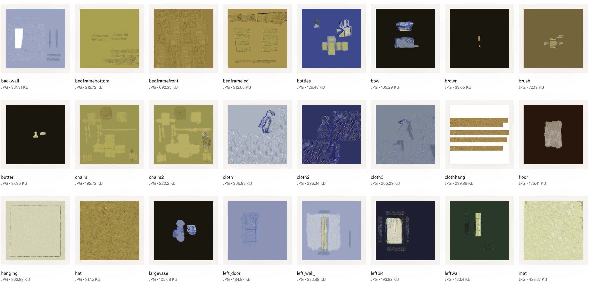 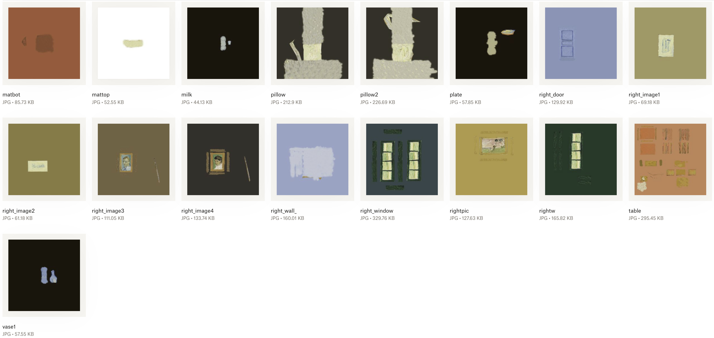Maya was the primary tool for creating the 3D space, which was a new and exciting challenge. Adobe Photoshop provided the means for texture creation, which I then edited with various tools to refine the final look.